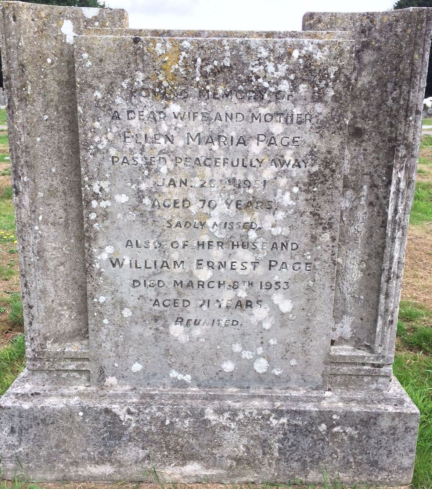
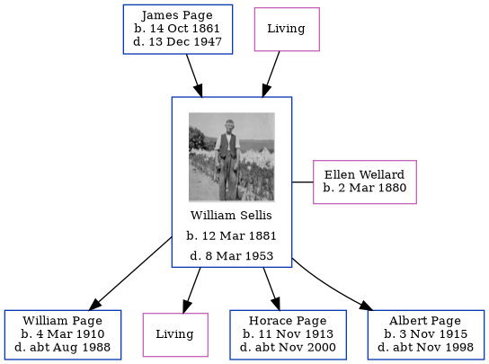

William Ernest Sellis 1881 - 1953
[ Home ] | [ Calendar ] | [ Surnames Index ] | [ Family History ]A general laborer and the son of James Page and Elizabeth Sellis, William Sellis, (also known as William Page) the third cousin once-removed on the father's side of Nigel Horne, was born in Folkestone, Kent, England on Mar 12, 18811, was baptized there at Christ Church on May 8, 1881 and married Ellen Wellard (with whom he had 4 children: William Charles Richard, Lena H M, Horace Stanley Wallis and Albert Edward Jellico, along with 1 surviving child) in Dover, Kent, England around May 19003. On Sep 29, 1939, he lived at 65 Marshall Street in Folkestone1.
He died on Mar 8, 1953 in Folkestone2 (died on way to Royal Victoria Hospital, Folkestone) and was buried in Hawkinge, Kent on Mar 14, 19534.
Parents
- James Henry was born on Oct 14, 1861
- Elizabeth Ann
Children
- William Charles Richard was born on Mar 4, 1910
- Horace Stanley Wallis was born on Nov 11, 1913
- Albert Edward Jellico was born on Nov 3, 1915
Citations
- 1939 Register - Findmypast (was the head of the household)
- England & Wales deaths 1837-2007 - Findmypast
- England & Wales Marriages 1837-2005 - Findmypast
- UK, Select Cemetery Registers, 1873-2014
Media
William Ernest Sellis

William Ernest Page - Ellen Wellard - Gravestone

1939 Register - TNA/R39/1721/1721B/021/42
England & Wales deaths 1837-2007 - BMD/D/1953/1/AZ/001002/104
Kent, Canterbury Archdeaconry baptisms 1538-1912 - GBPRS/CANT/B/96013388
England & Wales births 1837-2006 - BMD/B/1881/2/AZ/000512/158
1939 Register Transcription - TNA-R39-1721-1721B-021-44
England, Births & Baptisms 1538-1975 Transcription - R_884904671
England, Births & Baptisms 1538-1975 Transcription - R_884909779
Family Tree
Generated by Ged2Site. Last updated on Jul 20, 2025